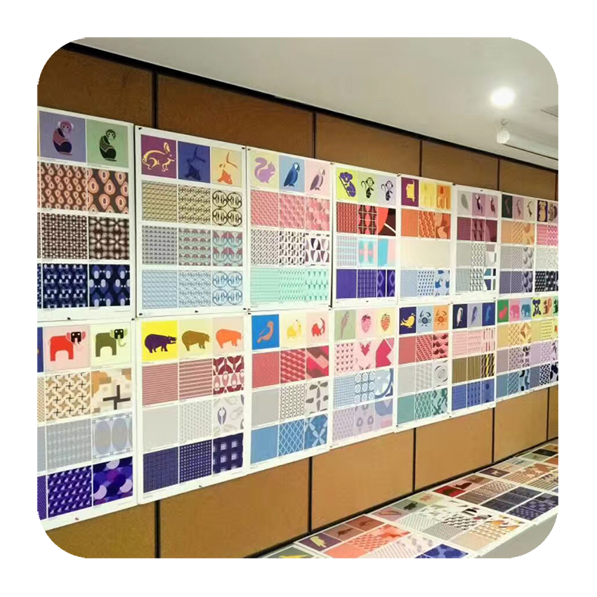
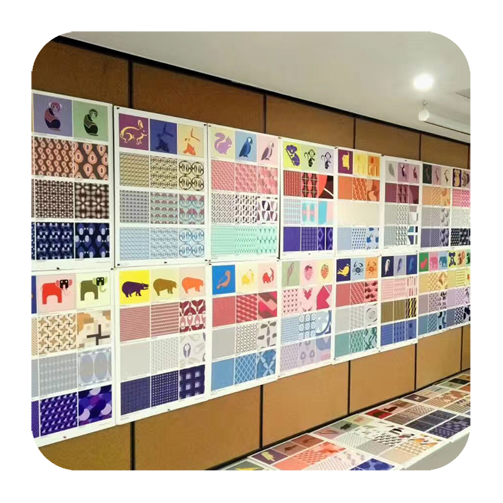
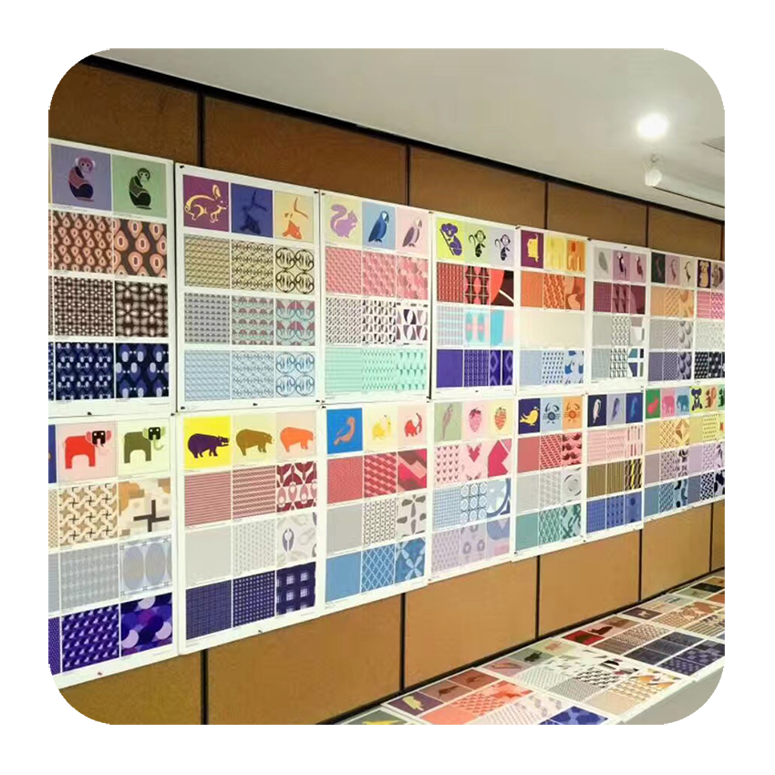
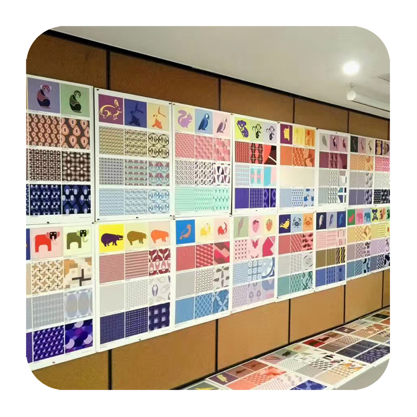

 

The Department of Industrial Design at Xi'an Jiaotong Liverpool University was established in 2013 and has academic staff with a breadth of academic and industrial experience, spanning the diverse skills and expertise represented within the field of design.
The department focusses on user-centred product and systems design for society in response to social, cultural, and technical context. We aim to educate a new generation of industrial and product designers who able to understand and participate in China's ongoing social, cultural, and economic transformation through achieving a balance of creative and technical knowledge and competencies.
Hi there!
Welcome to our studio page! We are authors who made this website, Hanxiao and Xueyan.
Xueyan comes from Hainan Province and Hanxiao comes from Shanxi Province. Both of us are Year 2 undergraduate students major in Industrial Design in XJTLU. We two were set in the same group and got to know each other in studio class, at the first semester in year 2. And soon we became close friends. As industrial Design students, we don't have too many lessons, but we do have many deadlines, so, we often spend time working on our assignments in studio.
We learn many staff in our studio class. For instance, prototype and model making, color proposal and scheme, human computer interaction etc. Also we have some models and videos that recorded our assignments. Moreover, our tutors are great. Some of them are quite strict and some of them are kind, but all of them are academic and conscientious, happy and ready to help each of their students at any time.
Anyway, our studio is a warm and lovely place to work in. Come and have a look if you are interested in our projects or our daily work,. We will be glad to show and introduce.